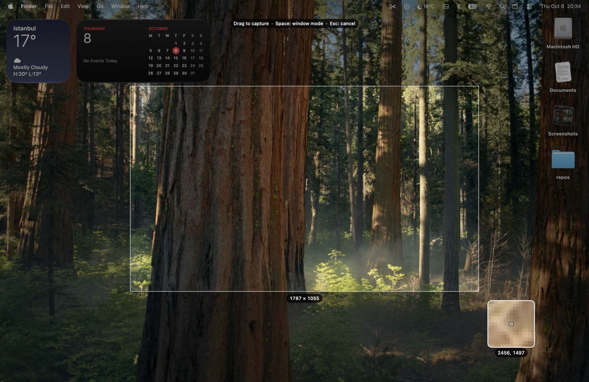

Screenshots, straight to your clipboard.
Press a shortcut, select an area, and paste. Click the notification to mark it up. A small, native menu-bar app for macOS 14 and later.

Press a shortcut, select an area, and paste. Click the notification to mark it up. A small, native menu-bar app for macOS 14 and later.
